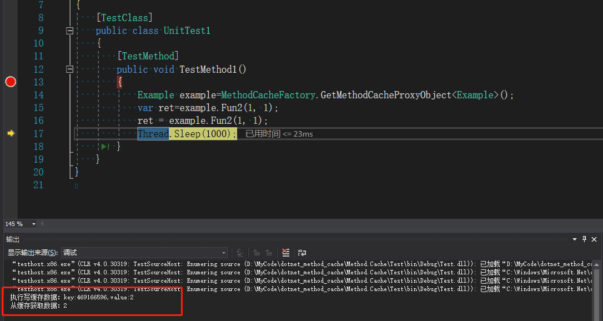
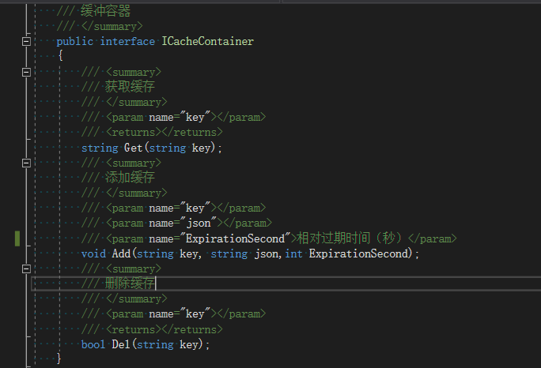

在服务器性能优化中，我们更多的是要考虑到缓存的使用，分享一个自己编写的方法缓存的框架，使用非常方便。话不多说，先上使用例子：
1.定义要使用缓存的类及方法：
public class Example
{
[CacheMethod(ExpirationSecond = 60*10)]
public virtual int Fun2(int a, int b)
{
return a + b;
}
}说明：
1.被缓存的方法必须使用虚方法
2.特性：CacheMethod.ExpirationSecond 指定缓存的相对失效时间（单位秒） 如果不指定该特性，缓存相对失效时间默认为60秒
2.创建缓存代理对象
Example example=MethodCacheFactory.GetMethodCacheProxyObject<Example>();3.调用缓存方法
var ret=example.Fun2(1, 1);//第一次调用会将返回值放入缓存中
ret = example.Fun2(1, 1);//第二次调用，如果缓存没有失效的话，会去缓存中拿到返回值，不会执行对应方法，如果缓存已经失效，那么则会执行原方法。

扩展：
代码中使用的是内存缓存，如果想使用分布式缓存如redis，请实现接口

并通过相关代码替换默认缓存容器：
ICacheContainer cacheContainer = null;//请实例化对应容器
MethodCacheFactory.SetCacheContainer(cacheContainer);//替换缓存默认容器完整项目及源码：
https://gitee.com/qianqianhr/dotnet_method_cache.git